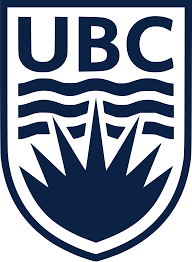

About Me
I am a software engineer with extensive experience in Docker, Kubernetes, C/C++, .Net Core, Java, NodeJS and SQL. Interested
in algorithm design and system architecture design.
Education

3B Computer Science, Honors Program, Digital Hardware Option
University of Waterloo
Thomson Reuters
Software Engineer Intern
- Designed and implemented a microservice architecture to migrate on-premise platform as a service to Kubernetes orchestration.
- Re-platformed existing services to .Net Core and containerized them with Docker. Created configuration files to deploy to a Kubernetes cluster.
- Improved the server performance by doubled the requests handled per second with Nginx as the load balancer. Utilized Openresty to embed business logic that validate HTTP requests with Lua scripts in Nginx. Deployed Nginx as a Kubernetes Ingress.
- Designed a CI/CD pipeline architecture. Created scripts to automate packaging solutions with Helm Chart. Rolled out updates with blue-green deployment strategy and provisioned new Kubernetes namespaces for integration tests.
BDO Canada LLP
Software Engineer Intern
- Designed and implemented software solutions using ASP.NET, C#, Azure, MSSQL and Angular according to business requirements for a successful release.
- Drafted, revised and finalized detail design documents, translating business requirements into technical solutions.
- Implemented new functionalities with Service Bus and SignalR technology. Improve search experience and speed by utilizing memory cache and indexing technology within the software solution. Spot, verify, document and fix various software defects.
- Performed extensive penetration testing with reference to OWASP Top 10 Projects by using SqlMap and ZAP. Prepared a detail report on potential issues and recommendations. Implemented new security mechanism to prevent SQL injection.
Bluejay Network Inc.
Software Engineer Intern
- Implemented a cross-platform mobile application using Cordova, Ionic and AngularJS. Planned, prepared and executed agile sprints and scrums with colleagues.
- Developed a backwards compatible REST API using Java EE, Hibernate, Spring MVC, Maven and MySQL.
- Planned, prepared and executed agile sprints and scrums with colleagues.
The University of British Columbia
Software Engineer Intern
- Collaborated and brainstormed an iOS application with an immunology professor for a community project. Drafted UI mock-ups and navigation transitions.
- Designed user interface, logics and models. Implemented with Objective-C in XCode. Applied multithreading to provide smoother user experience.
A cross-platform application designed to simplify file and content sharing between friends and devices. Built with NodeJS,
MySQL, Java and Objective-C hosted on Openshift. Utilized Fabric UI to provide consistent user-friendly interface
and experience.